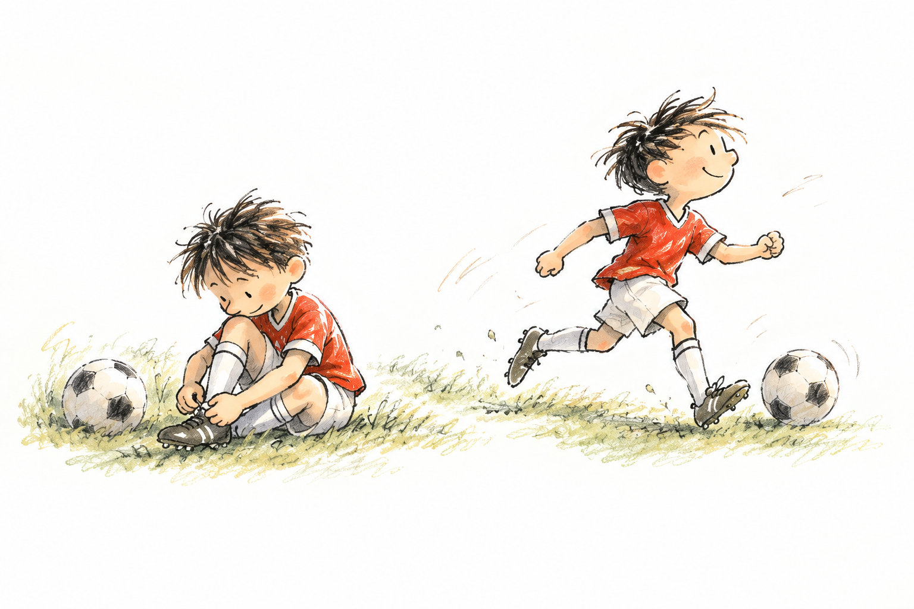
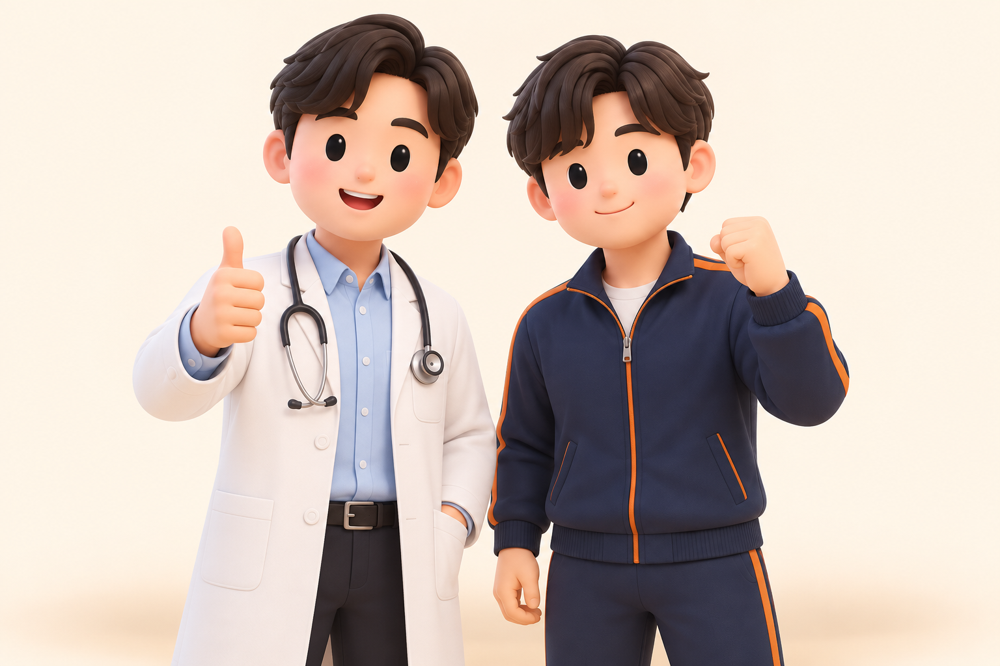

01 / Growing at my own pace
우리 아이만의 성장 속도로
스포츠멘탈을 강화합니다.

지금 지나고 있는 성장 시기
나의 8가지 멘탈 포지션
유형 유사도 · 순위나 성공 확률이 아닙니다이 포지션을 떠올리게 하는 선수들
공개된 경기 스타일을 이해하기 위한 예시입니다. 해당 선수의 실제 심리검사 결과나 추천·제휴를 뜻하지 않습니다.
바이오밴딩은 생물학적 성숙도를 고려해 훈련·경기 집단을 구성하는 접근입니다. 이 리포트는 그 관점으로 성장과 멘탈을 함께 읽으며, 실제 그룹 배정은 체격·기술·경험과 지도자의 관찰을 더해 결정합니다. 골연령은 심리적 나이를 뜻하지 않습니다.
02 / The strength to try again
성장단계에 맞춰, 강점과 회복을 읽어요.
현재 멘탈 포지션
종합 MGI · 1~6점
5대 지표, 같은 성장단계와 비교해요
우리 아이
보호자가 알아봐 줄 장면
다음 측정까지 함께 남길 기록
점수는 원자료의 1~6점 척도를 유지했습니다. 경기긴장도는 높을수록 긴장을 잘 다루는 방향입니다. 기존 기준 4.8 이상은 강점, 4.5 이상은 유지·연습 영역입니다. 낮은 점수는 성격이나 미래 가능성의 판정이 아닙니다. I축은 기존의 실수 회복력·외부평가 독립성 평균이며, 위의 회복 3지표와 별개입니다.
가상 샘플 · 선수 이력, 점수, 성장단계·또래 평균은 모두 예시입니다.
03 / A closer look at my mental skills
같은 성장단계와 또래 사이에서, 마음을 세밀하게 살펴요
성장단계 대비
또래 나이 대비
중앙선 = 각 집단의 평균왼쪽 −5점 ← 차이 0 → +5점 오른쪽오른쪽 상태 = 직전 측정과의 비교
세부지표현재 점수 / 6점
성장단계 비교같은 성장단계 평균 대비
또래 나이 비교같은 만 나이 평균 대비
직전 대비이전 측정과 비교
지난 측정과의 연결
04 / Growing together
멘탈은 원래 무너지라고 있는 겁니다.
다시 일어나면 그 뿐
Physical · 훈련의 초점
Mental · 대화의 초점
이 시기에 참고할 마음의 발달
표 2-5의 학교급별 특징을 MPS 성장단계에 연결한 지도 참고입니다. 아이의 실제 인지·정서·사회적 발달을 골연령이나 성장단계로 단정하지 않으며, 대화와 행동 관찰로 확인합니다.
이번 주, 이렇게 함께해 주세요
아이와 고르는 작은 행동함께 뛰어본 마음으로, 함께 돌보는 시선으로
스포츠MPS 센터 멘탈강화 프로그램
힘들 때, 불안할 때도
아이의 편에서 프로선수의 경험으로 함께 응원합니다.
프로선수 출신 스포츠심리상담사와 팀닥터가 함께 아이의 멘탈을 강화합니다. 경기장에서 느끼는 부담을 경험자의 시선으로 공감하고, 다시 도전하는 과정을 함께합니다.

프로선수 출신 스포츠심리상담사경험으로 공감
아이학부모 출신 팀닥터몸과 마음 살피기
01 마음 듣기→02 작은 연습 함께하기→03 변화 살펴보기
모바일 멘탈강화 다이어리
경기장 밖에서도 이어지는 마음의 성장